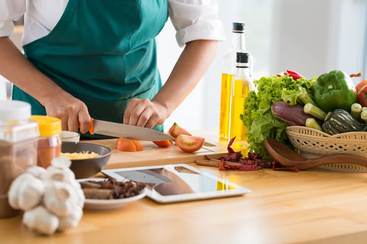

-
Truques Culinários

Um Pouco Sobre o Nosso Site
Primeiramente sejam Bem Vindos ao nosso site, aqui nós vamos aprender um pouco sobre pratos deliciosos!
Iremos testar receitas tanto de nossa região quanto de vários locais de nosso planeta, o nosso objetivo aqui é fazer comidas
maravilhosas e deixar nossas barrigas felizes! Então aqui vamos separar 3 receitas doces e salgadas para se adequar melhor aos
seus gostos, vamos contar com vídeos de profissionais para te auxiliar em qualquer dúvida e te acompanhar durante as receitas.
Te desejamos uma ótima experiência e agora MÃOS NA MASSA!!

Pois bem após nossa introdução podemos começar ordendo por onde começaremos e cada passo a passo.
Antes de começarmos acho importante resaltar como cada etapa funciona com elas separadas em 4 etapas, assim sendo:
PLANEJAMENTO
- onde iremos escolher o prato desejado para o preparo
MISE EN PLACE
- onde vamos organizar e separar os ingredientes e utensílios necessários
PREPARO
- nada mais nada menos que o começo da nosso prato, onde temos que seguir a todo momento a receita
FINALIZAÇÃO
- onde avaliamos nosso preparo e finalmente desfrutamos do nosso delicioso esforço
Então após esssa resumida de como funciona o preparo entre os outros metódos, vamos ver algumas das
três receitas selecionadas. Espero que gostem das receitas e se interessem em nosso site e
vejam outras das receitas que temos seleionadas aqui. Desejamos a vocês uma boa receita
e bom apetite!
Outras receitas: